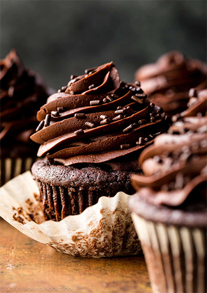

Double Chocalate Devil Cupcake
These super moist chocolate cupcakes pack TONS of chocolate flavor in each cupcake wrapper! Made from simple everyday ingredients, this easy cupcake recipe will be your new favorite.
Ingredients
- ¾ cup (94g) all-purpose flour (spooned and leveled)
- ½ cup (41g) unsweetened natural cocoa powder*
- 1 teaspoon espresso powder or instant espresso*
- ¼ teaspoon baking powder
- ½ teaspoon baking soda
- ¼ teaspoon salt
- 2 large eggs, at room temperature*
- ½ cup (100g) granulated sugar
- ½ cup (100g) packed light brown sugar
- ⅓ cup (80ml) vegetable or canola oil (or melted coconut oil)
- 2 teaspoons pure vanilla extract
- ½ cup (120ml) buttermilk, at room temperature*
- chocolate buttercreamand sprinkles for decorating
Steps
- Preheat the oven to 350°F (177°C). Line a 12-cup muffin pan with cupcake liners. Line a second pan with 2 liners—this recipe makes about 14 cupcakes. Set aside.
- Whisk the flour, cocoa powder, espresso powder, baking powder, baking soda, and salt together in a large bowl until thoroughly combined. Set aside. In a medium bowl, whisk the eggs, granulated sugar, brown sugar, oil, and vanilla together until completely smooth. Pour half of the wet ingredients into the dry ingredients. Then half of the buttermilk. Gently whisk for a few seconds. Repeat with the remaining wet ingredients and buttermilk.
- Stir until *just* combined; do not overmix. The batter will be thin.Pour or spoon the batter into the liners. Fill only halfway (this is imperative! only halfway!) to avoid spilling over the sides or sinking. Bake for 18-21 minutes, or until a toothpick inserted in the center comes out clean. Allow to cool completely before frosting.
- Frost cooled cupcakes with chocolate buttercream. You can swipe the frosting on with an icing knife or use a piping tip such as Wilton 1M. Leftover cupcakes keep well covered tightly in the refrigerator for 3 days. I recommend a cupcake carrier for storing and transporting decorated cupcakes.